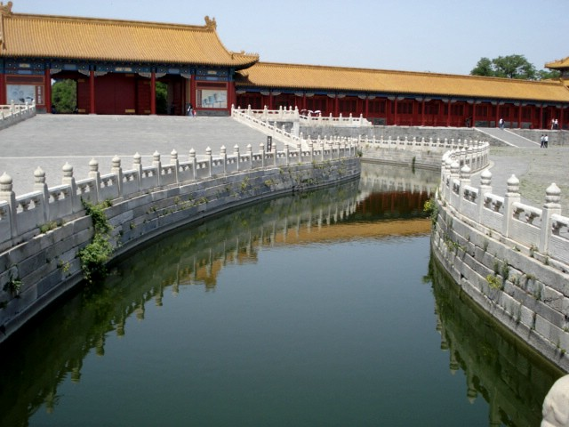

(continuation)
| Forbidden City (continuation) |
GO TO PAGE 6 OF 22 | BACK TO DATE PAGE | |||||||||||||
| There are five marble bridges to choose from as you move forward and cross the Golden Stream, which is shaped to resemble a Tartar bow. This is looking toward the left-most bridge and the corner tower of the Supreme Harmony Gate. | |||||||||||||||
|  | |||||||||||||||
| GO TO PAGE 6 OF 22 | BACK TO DATE PAGE | ||||||||||||||
| The Golden Stream doubled as a fire-fighting source of water. | |||||||||||||||